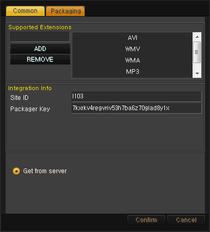

퀵스타트 가이드
개요
퀵스타트 가이드는 PallyCon Service에서 제공하는 샘플 사용법에 대한 가이드입니다. 간단한 웹 페이지에서 PallyCon Player (Mobile, Web)를 호출하여 스트리밍 재생을 하거나 다운로드 후 로컬 재생하는 것을 확인 하실 수 있습니다.
샘플은 아래의 링크에서 다운로드 받으실 수 있습니다.
이 샘플을 적용하면서 PallyCon Service를 적용하는데 어떤 작업이 필요하고, 어떤 형태로 서비스가 되는지에 대하여 이해하실 수 있습니다.
필요조건
샘플을 구축하여 간단하게 구동하고, 서비스 조회까지 해보기 위해서는 가입 후 서비스 사이트 신청까지 되어야합니다. 서비스 사0이트가 성공적으로 신청되면, 서비스 사이트에 해당하는 Site ID와 Site Key, Packager Key를 확인할 수 있습니다.
샘플 페이지들은 .jsp로 구성되어 있습니다. 이 페이지를 수정하고, 사용하기 위해서는 Java와 Tomcat이 필요합니다. Java 6 (1.6)와 Java 7 (1.7) 응용 프로그램 및 서버 환경에서 Java를 배포 지원하는 Java 런타임 환경 (JRE)를 설치해야 합니다.
Java와 Tomcat를 다운받기 위해선 아래 링크를 통해 다운로드가 가능합니다.
- Java: http://www.oracle.com/technetwork/java/javase/downloads/index.html
- Tomcat: http://tomcat.apache.org
설치 파일 열기
PallyCon_Sample.zip 구성은 다음과 같습니다.
| Folders or Files | Description |
|---|---|
| sample.war | 샘플 소스가 있는 파일 |
| CloudApplicationPackager.zip | Cloud Application Packager 파일 |
Sample.war 구성
| Folders or Files | Description |
|---|---|
| /src/aes/ | aes256, base64encode 소스 샘플 파일이 있는 폴더 |
| /images | content_list.jsp 페이지에서 사용하는 image 관련 파일 포함 |
| /js | content_list.jsp 페이지에서 사용하는 jquery 관련 파일 포함 |
| /WEB-INF/classes/aes/ | aes256 class sample, base64encode class sample |
| /WEB-INF/lib | sample에 필요한 jar 파일 |
| /ServiceSite/aes_ok.jsp | 파라미터를 aes256 암호화 하는 페이지 파일 |
| /ServiceSite/service_manager.jsp | Mobile Service Site 페이지 파일 |
| /ServiceSite/service_manager_pc.jsp | PC Service Site 페이지 파일( Bookmark, LMS 정보 처리 포함 ) |
| /ServiceSite/config.jsp | 샘플을 실행시키기 위한 config 파일 |
| /ServiceSite/content_list.jsp | Mobile Web sample 페이지 파일 |
| /ServiceSite/content_list_pc.jsp | PC Web sample 페이지 파일 |
| /CIDIssue_RightsInfo/CIDIssue.jsp | CID 발급 페이지 파일 |
| /CIDIssue_RightsInfo/ContentUsageRightsInfo.jsp | 콘텐츠 사용 권한 정보 페이지(Content Usage Rights Info gateway) 파일 |
CloudApplicationPackager.zip 구성
| Folders or Files | Description |
|---|---|
| Bin/PallyCon_packager.exe | 프로그램 실행 파일 |
| Bin/Setting.ini,images | 프로그램을 실행하는데 필요한 파일 |
| Release_Note.txt | 이번 버전에서 변경된 사항 기술 |
설치 및 콘텐츠 준비
PallyCon Service에서 제공하는 샘플파일을 이용하여 간단하게 서비스를 구축하기 위한, 과정에 대하여 설명합니다.
파일 설치하고, 내용 수정하기
Step1: Web 페이지 복사
sample 파일 압축 해제 후 war 파일을 tomcat manager를 통해 웹서버에 올립니다.
Step2: config.jsp 파일 수정
config.jsp 파일의 수정은 PC / Mobile에 공통으로 영향을 주는 값들에 대한 수정입니다.
aes256 configration (aes key config)
key를 PallyCon CP Admin에서 확인이 가능한 Site Key 로 변경하여 세팅합니다. AES256 암호화 및 복호화에 Site Key와 함께 사용되는 Initial Vector는 고정값으로 사용됩니다. (Initial Vector: 1234567890abcdef)
Content Usage Info Page (gateway config)
DRM이 적용된 컨텐츠를 사용하기 위한 라이선스 정보를 설정합니다. LIMIT, PD_START, PD_END, PD_COUNT 값을 아래와 같이 설정하여 라이선스 정보을 결정합니다. PallyCon Player(Mobile, PC)는 횟수제가 설정된 라이선스에 대한 재생 처리는 지원하지 않습니다.
| License Rules | LIMIT | PD_START | PD_END | COUNT |
|---|---|---|---|---|
| 횟수제 | Y | Empty | Empty | 0 보다 큰 값 |
| 기간제 | Y | PD_END보다 이전 날짜 | PD_START보다 이후 날짜 | Empty |
| 기간제+횟수제 | Y | PD_END보다 이전 날짜 | PD_START보다 이후 날짜 | 0 보다 큰 값 |
| 무제한 | N | Empty | Empty | Empty |
날짜: GMT (YYYY-MM-DDThh:mm:ss)
content_list configration (content list config)
DRM 컨텐츠 재생 및 다운로드시 필요한 정보를 세팅 합니다.
- sSite_ID: PallyCon admin 페이지에 발급되어있는 siteID
- sSite_Url: 현재 서버 IP 및 domain
- sFilename1: 첫 번째 목록의 콘텐츠 filename과 확장자 (원본/DRM)
- sFilename2: 두 번째 목록의 콘텐츠 filename과 확장자 (원본/DRM)
- sFilename3: 세 번째 목록의 콘텐츠 filename과 확장자 (원본/DRM)
기타 메타데이터는 sCategory_name, sCategory_teacher, Content_name1, Content_name2, Content_name3의 수정을 통해 설정할 수 있습니다.
언어 설정하기
sLanguage의 값으로 언어 설정을 합니다. 언어 지원은 한국어(KR), 영어(EN)가 지원됩니다.
Step3: PallyCon CP Admin에 URL 세팅
PallyCon CP Admin에 Content ID Issue Page URL으로 CIDIssue.jsp의 URL 을 설정하고, Content Usage Rights Info Page URL으로 ContentUsageRightsInfo.jsp의 URL을 설정합니다.
- CIDIssue.jsp의 URL: http://IP:8080/sample/CIDIssue_RightsInfo/CIDIssue.jsp
- ContentUsageRightsInfo.jsp의 URL: http://IP:8080/sample/CIDIssue_RightsInfo/ContentUsageRightsInfo.jsp
Packaging, DRM 콘텐츠 준비하기
Packager을 통해 원본컨텐츠를 암호화하여 .ncg 파일로 패키징 할 수 있습니다.
Step1: Packager 실행
- 첨부된 CloudApplicationPackager.zip 파일 압축을 풉니다.
- PallyCon_Packager.exe 파일을 실행시킵니다.
Step2: Packager 세팅
PallyCon CP Admin에서 확인이 가능한 Site ID 와 Packager Key를 입력합니다.

Step3: Packaging
테스트 할 MP4파일 3개를 선택 후 start packaging 버튼을 클릭하여 파일을 Packaging 합니다. (8번 버튼 클릭)

Step4. Packaging 완료된 콘텐츠 파일 세팅
Packaging이 완료되면 원본콘텐츠(MP4)는 DRM콘텐츠(NCG)로 변환됩니다.
- DRM 콘텐츠를
/$TOMCAT_HOME/webapp/sample/ServiceSite/cont에 위치 시킵니다. - 해당 콘텐츠 파일명을 config.jsp의 sFilename1,2,3 값으로 변경합니다.
구동시키기
PallyCon Mobile Player 설치하기
PallyCon Mobile Player는 앱 스토어나 구글 플레이를 통해 설치할 수 있습니다.


PallyCon PC Web Player는 URL을 호출하여 팝업으로 Player를 실행하는 구조로 되어 있습니다. URL은 PC Web sample 페이지에 링크되어 있어 별도로 설치할 필요가 없습니다.
스트리밍, 다운로드, 로컬 재생하기
PallyCon Player는 Mobile/PC Web Browser 에서 호출하여 사용하는 방법으로 구동됩니다.
스트리밍
PC/Mobile Web sample 페이지에서 Play 버튼을 터치하면 각 PallyCon Player를 호출하여 스트리밍을 시작합니다.
[Mobile] 다운로드
Mobile Web sample 페이지에서 Download 버튼을 터치하면 PallyCon Mobile Player를 호출하여 다운로드를 시작합니다.
[Mobile] 로컬 재생
다운로드된 DRM 콘텐츠는 리스트에서 확인할 수 있습니다. 리스트에서 원하는 콘텐츠를 터치하면, 로컬 재생을 시작합니다.
사용 내역 조회하기
간단히 적용하여 테스트 하면서 발급받은 Licnese와 Packaging된 콘텐츠에 대한 정보를 PallyCon CP Admin 페이지에서 조회할 수 있습니다.
Revision History
이 테이블은 Quick 가이드의 수정사항에 대해 설명한 것입니다.
| Date | Detail |
|---|---|
| 2014.08.28 | Quick Guide 제작 |
| 2014.12.09 | PallyCon PC Player 내용 추가 |